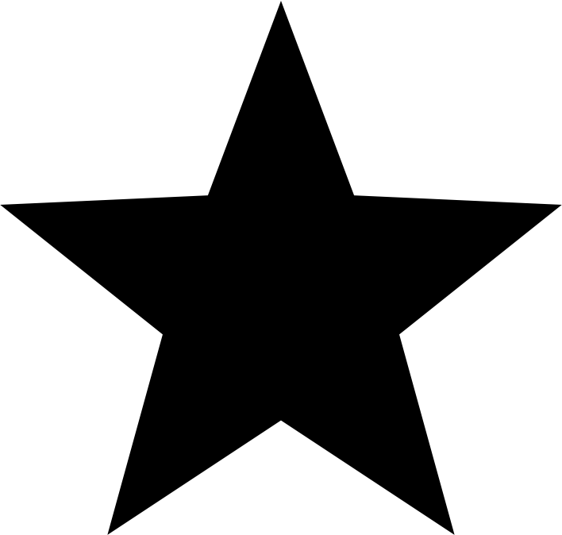

Testimoni
Testimoni dari warga yang menikmati pelayanan kami

"Sebagai mahasiswa, saya sering kesulitan menemukan referensi yang kredibel. Namun, sejak menggunakan situs ini, saya tidak pernah lagi mengalami masalah tersebut. Platform ini menyediakan berbagai sumber yang terpercaya dan update. Terima kasih!"
Chris Hemswort

"Website ini sangat membantu dalam penelitian saya! Informasi yang disediakan lengkap dan mudah diakses, membuat proses pencarian data menjadi jauh lebih efisien. Saya sangat merekomendasikan situs ini untuk para peneliti dan akademisi."